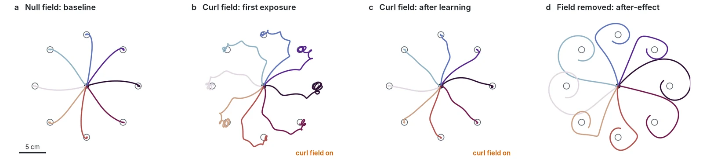

A Neural Network Motor Cortex That Adapts Like People Do
A recurrent neural network learns to control a model human arm, then goes through a classic experiment from motor neuroscience. It adapts to a force field the way people do, and keeps the same after-effect people show. The same network then drives a robot arm.
The experiment
In a classic experiment (Shadmehr and Mussa-Ivaldi, 1994), people reach to targets while a robot pushes their hand sideways, harder the faster they move. At first their reaches curve. With practice they straighten. When the push is switched off, their reaches curve the other way: the brain has learned to expect the force, and keeps counteracting it after it is gone.
I trained a recurrent network to control a simulated arm with six muscles, with realistic delays in what it sees and feels. It is only asked to reach accurately with little effort, and it never meets the force field during training. Then it goes through the same experiment.

The network reproduces the classic signatures: smooth, bell-shaped hand speeds, adaptation, and a mirror-image after-effect. Measuring the force it produces shows it learns to predict the push rather than simply stiffening the arm, which is also what people do.
On a robot
The same network, task and protocol, now sending torques to a seven-joint Franka Panda in simulation, adapts the same way.
On the real robot
The same network, with its weights frozen, now drives a real Franka Panda from inside its 1 kHz torque controller. A virtual force field pushes the hand sideways, like the robot handle in the human experiments, and the reaches straighten out over a few tries without any retraining.
How much it adapts, measured over 20 pairs of episodes. In each pair the arm makes the same six 6 cm reaches twice, once with a 35 N·s/m curl field and once without. The table shows the extra sideways error the field causes at peak speed (field minus no field), averaged over the 20 pairs.
| reach in the episode | 1 | 2 | 3 | 4 | 5 | 6 |
|---|---|---|---|---|---|---|
| extra sideways error (mm) | 2.69 | 2.01 | 1.26 | 1.97 | 1.56 | 0.86 |
| 95% interval (mm) | 2.47–2.93 | 1.33–2.66 | 0.49–1.96 | 1.54–2.47 | 1.01–2.07 | 0.45–1.28 |
From the first reach to the last two, the error drops by 1.49 mm (95% interval 1.11–1.81 mm), with the network's weights frozen the whole time. I wrote the prediction down before the session: the simulation expected a drop of 0.6–1.0 mm, so the real arm adapted more than predicted. Peak hand speed stays at 0.31–0.34 m/s with and without the field, so the reaches are not straighter because they are slower. All 40 episodes ran without a safety stop.
Getting there took some debugging. The first run shook itself into the safety limits after 0.68 s, with the hand swinging 31 mm up and down, because the real arm delivers torque less cleanly than the simulator assumed. Measuring that with the robot's own torque sensors, and adding a little damping in the controller, fixed it: the swing fell to 7.5 mm and the reaches ended 2–4 mm from their targets. The controller's safety layer was checked against the Python policy before it ever moved the arm.
This is ongoing work. These are the first hardware results, and I am running further experiments on the real arm while refining the controller and improving the policy.
Built in JAX and MuJoCo MJX: the network is trained by passing gradients through the arm's physics, then runs on the real robot unchanged.